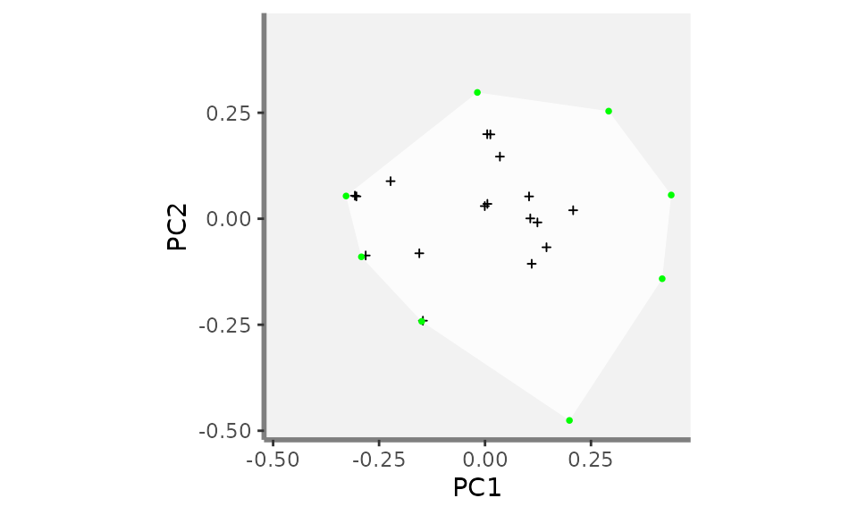
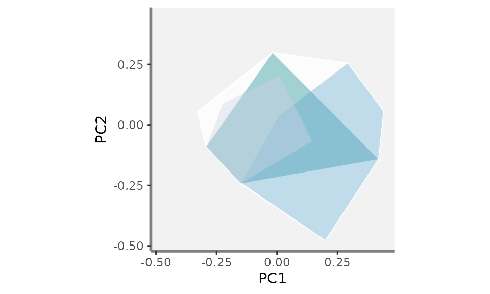
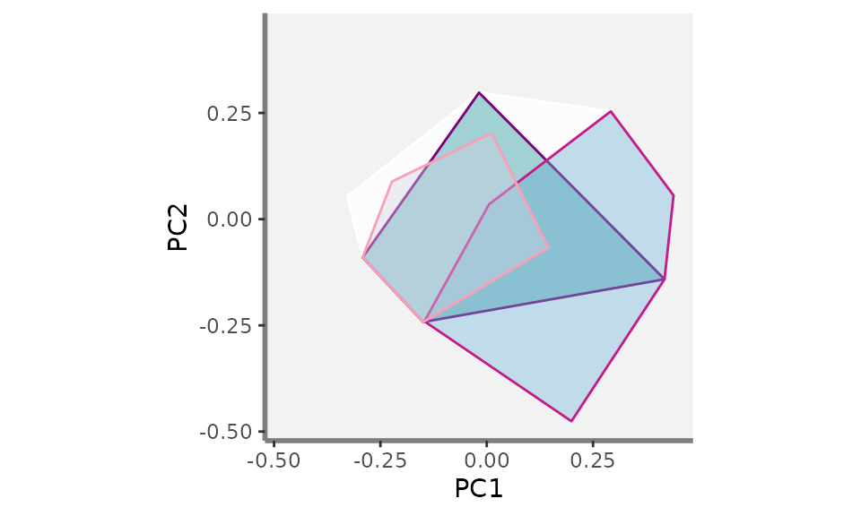
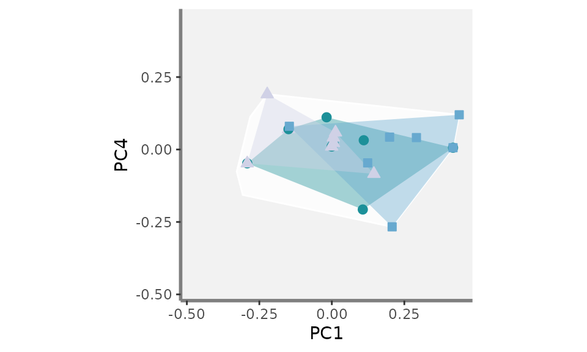
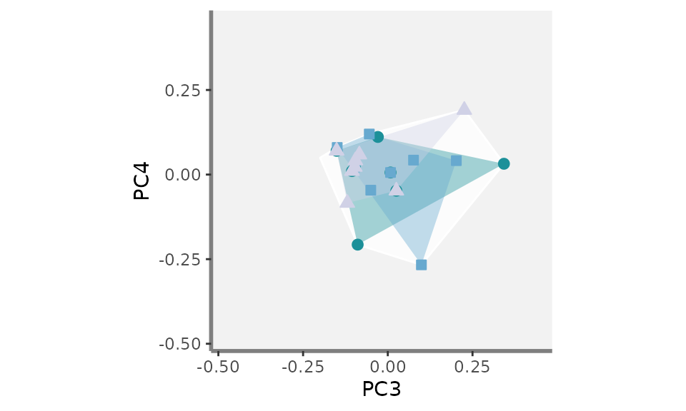

Customised plots
Camille Magneville
2023-12-11
Source:vignettes/Customised_plots.Rmd
Customised_plots.RmdAbout this tutorial
The alpha.fd.multim() function of the mFD
package computes plots of functional indices for up to two assemblages
with no distinction of species shapes. However, it is sometimes
interesting to plot more than two assemblages or to plot species with
different shapes according to categories of a given non-continuous
trait. This tutorial illustrates both cases using functions present in
the mFD package.
Plots in the mFD
package are based on the ggplot2 philosophy: by
adding several layers of graphic contents, you retrieve your global
plot. Plotting more than two convex hulls or shaping species according
to a trait values thus relies on this technic using basic graphical
functions available in mFD. In order to plot an indice for
a given pair of functional axes, you need to use:
A first function: background.plot() create a ggplot object with customized axis ranges, names and background
A second function: pool.plot() plots all species from the study cases with customized shape and colour and the associated convex-hull with customized colour.
A third function: fric.plot() plots the convex hulls of all the studied assemblages with customized colours and opacities for each assemblage. It also plots species from each assemblage in a customized colour/shape/ fill. This function can be replaced by any other function to plot other functional indices (fdiv.plot(), fdis.plot(), feve.plot(), fide.plot(), fnnd.plot(), fori.plot() or fspe.plot()). The challenging part of this tutorial is here as these functions need informations such as the species coordinates for each assemblage and the vertices identity which must be retrieved before. Don’t worry, we’ll see it step by step thereafter ;)
Once these functions have been used as many times as needed to plot all the combinations of axis pairs, all the plots are combined into a nice design using the patchwork package.
Load data
The data used here is the same as the one used in the mFD General workflow tutorial.
The dataset contains 25 types of fruits (i.e. species) distributed in 10 fruits baskets (i.e. assemblages). Each fruit is characterized by five traits values summarized in the following table:
| Trait name | Trait measurement | Trait type | Number of classes | Classes code | Unit |
|---|---|---|---|---|---|
| Size | Maximal diameter | Ordinal | 5 | 0-1 ; 1-3 ; 3-5 ; 5-10 ; 10-20 | cm |
| Plant | Growth form | Categorical | 4 | tree; shrub; vine; forb | NA |
| Climate | Climatic niche | Ordinal | 3 | temperate ; subtropical ; tropical | NA |
| Seed | Seed type | Ordinal | 3 | none ; pip ; pit | NA |
| Sugar | Sugar | Continuous | NA | NA | g/kg |
Let’s call the species*assemblages matrix:
# Load data:
data("baskets_fruits_weights", package = "mFD")
# Display the table:
knitr::kable(as.data.frame(baskets_fruits_weights[1:6, 1:6]),
centering = TRUE,
caption = "Species x assemblages matrix based on the **fruits** dataset")| apple | apricot | banana | currant | blackberry | blueberry | |
|---|---|---|---|---|---|---|
| basket_1 | 400 | 0 | 100 | 0 | 0 | 0 |
| basket_2 | 200 | 0 | 400 | 0 | 0 | 0 |
| basket_3 | 200 | 0 | 500 | 0 | 0 | 0 |
| basket_4 | 300 | 0 | 0 | 0 | 0 | 0 |
| basket_5 | 200 | 0 | 0 | 0 | 0 | 0 |
| basket_6 | 100 | 0 | 200 | 0 | 0 | 0 |
Let’s call the traits dataframe:
# Load data:
data("fruits_traits", package = "mFD")
# Remove fuzzy traits in this tutorial:
fruits_traits <- fruits_traits[ , -c(6:8)]
# Display the table:
knitr::kable(head(fruits_traits),
caption = "Species x traits data frame")| Size | Plant | Climate | Seed | Sugar | |
|---|---|---|---|---|---|
| apple | 5-10cm | tree | temperate | pip | 103.9 |
| apricot | 3-5cm | tree | temperate | pit | 92.4 |
| banana | 10-20cm | tree | tropical | none | 122.3 |
| currant | 0-1cm | shrub | temperate | pip | 73.7 |
| blackberry | 1-3cm | shrub | temperate | pip | 48.8 |
| blueberry | 0-1cm | forb | temperate | pip | 100.0 |
Let’s call the dataframe which summarise the type of each traits:
# Load data:
data("fruits_traits_cat", package = "mFD")
# Remove fuzzy traits in this tutorial:
fruits_traits_cat <- fruits_traits_cat[-c(6:8), ]
# Thus remove the "fuzzy_name" column:
fruits_traits_cat <- fruits_traits_cat[ , -3]
# Display the table:
knitr::kable(head(fruits_traits_cat),
caption = "Traits types based on **fruits & baskets** dataset")| trait_name | trait_type |
|---|---|
| Size | O |
| Plant | N |
| Climate | O |
| Seed | O |
| Sugar | Q |
Plotting more than two assemblages
Basic workflow before plotting
For more information about the basic workflow before plotting, have a look at the mFD General Worklow Part 3 to 6. We here assume that these steps are ok for you and just compute functional distances and functional indices based on the 4D space which is the best given the data we have.
Compute functional distances between all the species in the data:
USAGE
sp_dist_fruits <- mFD::funct.dist(
sp_tr = fruits_traits,
tr_cat = fruits_traits_cat,
metric = "gower",
scale_euclid = "scale_center",
ordinal_var = "classic",
weight_type = "equal",
stop_if_NA = TRUE)Compute the quality of the functional spaces and species coordinates in the chosen functional space:
USAGE
# Quality of functional spaces:
fspaces_quality_fruits <- mFD::quality.fspaces(
sp_dist = sp_dist_fruits,
maxdim_pcoa = 10,
deviation_weighting = "absolute",
fdist_scaling = FALSE,
fdendro = "average")
# retrieve species (fruits) coordinates in the 4D space (see General tutorial):
sp_faxes_coord_fruits <- fspaces_quality_fruits$"details_fspaces"$"sp_pc_coord"Compute alpha FD indices (here only Functional Richness but if other indices have to be plotted, then compute them):
USAGE
alpha_fd_indices_fruits <- mFD::alpha.fd.multidim(
sp_faxes_coord = sp_faxes_coord_fruits[ , c("PC1", "PC2", "PC3", "PC4")],
asb_sp_w = baskets_fruits_weights,
ind_vect = c("fric"),
scaling = TRUE,
check_input = TRUE,
details_returned = TRUE)Now, we have the data to begin the plot!
Plotting functional convex-hulls for more than two assemblages for one pair of axis
In this part, we’ll show you how to plot more than two convex-hulls for more than two assemblages. Then, we’ll gather all the information in a loop to do the plots for all pairs of axis.
a - Background
The first step is to compute the background of the plot using the background.plot() function. This function needs three main inputs:
range_faxes: a vector containing the minimum and maximum values of axes. Note: in order to have a fair representation of species postition in all plots combining different pairs of axes, they should have the same axes ranges. Next, we will show how to compute ranges according to the range of valus among all axes.
faxes_nm: a vector containing the axes labels in the figure.
color_bg: a R color name or an hexadecimal code used to fill the plot background.
Let’s plot the background of the plot for one combination of axis (PC1 and PC2)!
USAGE Compute the range of functional axes
# Compute the range of functional axes:
range_sp_coord <- range(sp_faxes_coord_fruits)
# Based on the range of species coordinates values, compute a nice range ...
# ... for functional axes:
range_faxes <- range_sp_coord +
c(-1, 1) * (range_sp_coord[2] - range_sp_coord[1]) * 0.05
range_faxes## [1] -0.5214338 0.4850924USAGE Plot background for PC1 and PC2 plot
# get species coordinates along the two studied axes:
sp_faxes_coord_xy <- sp_faxes_coord_fruits[, c("PC1", "PC2")]
# Plot background with grey backrgound:
plot_k <- mFD::background.plot(range_faxes = range_faxes,
faxes_nm = c("PC1", "PC2"),
color_bg = "grey95")
plot_k
b - Add the global convex-hull
The convex-hull shaping the global pool of species is then added to
the background plot. Species can be plotted with a minimal shape and
color or even not displayed (what we will do here) thus when plotting
species from wanted assemblages, there is not too much information on
the graph. There are two steps: first, retrieving the coordinates of
species being vertices along the two studied functional axes and second,
add species from the global pool to the background plot (called
plot_k in this tutorial):
Step 1: vertices Realised using the vertices() function which identifies species being vertices of the minimal convex-hull enclosing a community. It needs three main inputs:
sp_faxes_coord: the matrix of species coordinates in the chosen functional space. Here, as we are interested in PC1 and PC2, the
sp_faxes_coordmatrix only contains coordinates along PC1 and PC2.order_2D: TRUE/FALSE indicating whether vertices names are reordered so that they define a convex polygon in two dimensions which is convenient for plotting.
check_input: same argument as many of the
mFDfunctions allowing to have customized error messages and not R basic ones.
USAGE Retrieve vertices coordinates along PC1 and PC2
# Retrieve vertices coordinates along the two studied functional axes:
vert <- mFD::vertices(sp_faxes_coord = sp_faxes_coord_xy,
order_2D = FALSE,
check_input = TRUE)Step 2: Add global convex-hull of species Realised using the pool.plot() function which plot all species from the global pool and the associated convex hull with customized shape and colors for species and customised colours and opacity for the convex-hull. Species being vertices can also be plotted with a different shape or color. It needs three main inputs:
ggplot_bg: the ggplot object created on the step before ie the plot of the background retrieved through the background.plot() function.
sp_coord_2D: the matrix of species coordinates but with coordinates only for the ais to plot thus here only PC1 and PC2. It corresponds to the
sp_faxes_coord_xyobject created before.vertices_nD: a vector containing the name of species being vertices along the two studied dimensions. It correspond to the
vertobject created before. We will here first show how to plot vertices with different shape/color. Yet, in order to have a clear plot with more than two convex-hulls (goal of this tutorial) we will then remove vertices shape and color by settingnullto thevertices_nDargument.arguments to customise species shape and colours:
color_pool,fill_pool,shape_poolandsize_poolarguments can be used. We will here first show how to plot species with customised shape/color. Yet, in order to have a clear plot with more than two convex-hulls (goal of this tutorial) we will then not display species by settingNAto thecolor_poolargument.arguments to customise vertices shape and colours:
color_vert,fill_vert,shape_vertandsize_vertarguments can be used. We will here first show how to plot vertices with different shape/color. Yet, in order to have a clear plot with more than two convex-hulls (goal of this tutorial) we will then remove vertices shape and color by setting aestiteic arguments of vertices toNA.arguments to customise the convex hull of the global pool:
color_ch,fill_chandalpha_charguments can be used.
USAGE Add convex-hull, species & vertices from the global pool (plot not used in the workflow of this tutorial because it is too complex to be able to easily read the final plot with more than two convex-hulls)
plot_sp_vert <- mFD::pool.plot(ggplot_bg = plot_k,
sp_coord2D = sp_faxes_coord_xy,
vertices_nD = vert,
plot_pool = TRUE,
color_pool = "black",
fill_pool = NA,
alpha_ch = 0.8,
color_ch = NA,
fill_ch = "white",
shape_pool = 3,
size_pool = 0.8,
shape_vert = 16,
size_vert = 1,
color_vert = "green",
fill_vert = "green")
plot_sp_vert
USAGE Let’s continue the workflow on how to plot more than two convex-hulls! Thus remove species otherwise the final plot will be difficult to read ;)
plot_k <- mFD::pool.plot(ggplot_bg = plot_k,
sp_coord2D = sp_faxes_coord_xy,
vertices_nD = vert,
plot_pool = FALSE,
color_pool = NA,
fill_pool = NA,
alpha_ch = 0.8,
color_ch = "white",
fill_ch = "white",
shape_pool = NA,
size_pool = NA,
shape_vert = NA,
size_vert = NA,
color_vert = NA,
fill_vert = NA)
plot_kc - Add the convex-hulls and species of the wanted assemblages
Convex-hulls from the wanted assemblages can then be added to the
plot_k object which now contains the background and the
convex-hull from the global pool of species. Here, we will plot
three assemblages: basket 1, basket 4 and basket 10 with different
colors using the fric.plot()
function. You can play with colors and opacities of each convex-hull
so the graph is easy to read and convex-hulls are easily
distinguisable.
Step 1: Get the coordinates of species of the assemblages to plot Realised using the sp.filter() and the vertices() functions to first retrieve the coordinates of species belonging to the assemblages to plot and then the names of species being vertices.
USAGE Retrieve the coordinates of species belonging to basket_1, basket_6 and basket_10:
# basket_1:
## filter species from basket_1:
sp_filter_basket1 <- mFD::sp.filter(asb_nm = c("basket_1"),
sp_faxes_coord = sp_faxes_coord_xy,
asb_sp_w = baskets_fruits_weights)
## get species coordinates (basket_1):
sp_faxes_coord_basket1 <- sp_filter_basket1$`species coordinates`
# basket_6:
## filter species from basket_6:
sp_filter_basket6 <- mFD::sp.filter(asb_nm = c("basket_6"),
sp_faxes_coord = sp_faxes_coord_xy,
asb_sp_w = baskets_fruits_weights)
## get species coordinates (basket_6):
sp_faxes_coord_basket6 <- sp_filter_basket6$`species coordinates`
# basket_10:
## filter species from basket_10:
sp_filter_basket10 <- mFD::sp.filter(asb_nm = c("basket_10"),
sp_faxes_coord = sp_faxes_coord_xy,
asb_sp_w = baskets_fruits_weights)
## get species coordinates (basket_10):
sp_faxes_coord_basket10 <- sp_filter_basket10$`species coordinates`Let’s have a look at the coordinates of species from
basket_1: note that we are still working with the
coordinates along the two studied functional axis PC1 and PC2
sp_faxes_coord_basket1## PC1 PC2
## apple 0.0055715265 0.0350421604
## banana 0.4180172546 -0.1414728845
## cherry -0.0180809780 0.2978695529
## lemon 0.1067949113 0.0007714157
## melon -0.1493941692 -0.2420723462
## passion_fruit 0.1101264243 -0.1062790540
## pear -0.0005886084 0.0297927029
## strawberry -0.2917242495 -0.0898440618USAGE Retrieve the names of species being vertices of basket_1, basket_6 and basket_10:
# basket_1:
vert_nm_basket1 <- mFD::vertices(sp_faxes_coord = sp_faxes_coord_basket1,
order_2D = TRUE,
check_input = TRUE)
# basket_6:
vert_nm_basket6 <- mFD::vertices(sp_faxes_coord = sp_faxes_coord_basket6,
order_2D = TRUE,
check_input = TRUE)
# basket_10:
vert_nm_basket10 <- mFD::vertices(sp_faxes_coord = sp_faxes_coord_basket10,
order_2D = TRUE,
check_input = TRUE)Step 2: Adding assemblages convex_hulls and species Realised using the fric.plot() function. This function has a lot of argument to customise the plot and play with colours, shapes and opacity. Its main inputs are:
plot_k: the ggplot object created on the steps before ie the plot of the background retrieved through the background.plot() function with the global convex hull added through the pool.plot() function.
asb_sp_coord_2D: a list containing the coordinates of species belonging to each assemblage to plot across the two functional ais studied (here PC1 and PC2). Note: each element of this list reflects a given assemblage and each element must be nammed after the assemblage.
asb_vertices_nD: a list containing a list (with names as in asb_sp_coord2D) of vectors with names of species being vertices in n dimensions. Note: each element of this list reflects a given assemblage and each element must be nammed after the assemblage.
plot_sp: a TRUE/FALSE value indicating whether species from the studied assemblages must be plotted. If
TRUE, then the argumentsshape_sp,size_sp,color_spandfill_sphelp to customise species shapes/sizes/colours and the argumentsshape_vert,size_vert,color_vertandfill_verthelp to customise vertices. For shape/size/colour arguments, each element of the input list reflects a given assemblage and each element must be nammed after the assemblage see the function help for more informationcolor_ch, fill_ch and alpha_ch: are lists containing colors and opacity values to caracterise each convex-hull of the studied assemblage. Note: each element of these lists reflects a given assemblage and each element must be nammed after the assemblage and the order in which each assemblage is given must reflect the same order than the asb_sp_coord_2D order. Can be set up to
NAif no colors are to be plotted.
USAGE Add the convex-hulls of the three studied assemblages: only convex hulls with transparent surroundings, no species plotted
plot_try <- mFD::fric.plot(ggplot_bg = plot_k,
asb_sp_coord2D = list("basket_1" = sp_faxes_coord_basket1,
"basket_6" = sp_faxes_coord_basket6,
"basket_10" = sp_faxes_coord_basket10),
asb_vertices_nD = list("basket_1" = vert_nm_basket1,
"basket_6" = vert_nm_basket6,
"basket_10" = vert_nm_basket10),
plot_sp = FALSE,
color_ch = NA,
fill_ch = c("basket_1" = "#1c9099",
"basket_6" = "#67a9cf",
"basket_10" = "#d0d1e6"),
alpha_ch = c("basket_1" = 0.4,
"basket_6" = 0.4,
"basket_10" = 0.4),
shape_sp = NA,
size_sp = NA,
color_sp = NA,
fill_sp = NA,
shape_vert = NA,
size_vert = NA,
color_vert = NA,
fill_vert = NA)
plot_try
USAGE Add the convex-hulls of the three studied assemblages: only convex hulls with coloured surroundings, no species plotted
plot_try <- mFD::fric.plot(ggplot_bg = plot_k,
asb_sp_coord2D = list("basket_1" = sp_faxes_coord_basket1,
"basket_6" = sp_faxes_coord_basket6,
"basket_10" = sp_faxes_coord_basket10),
asb_vertices_nD = list("basket_1" = vert_nm_basket1,
"basket_6" = vert_nm_basket6,
"basket_10" = vert_nm_basket10),
plot_sp = FALSE,
color_ch = c("basket_1" = "#7a0177",
"basket_6" = "#c51b8a",
"basket_10" = "#fa9fb5"),
fill_ch = c("basket_1" = "#1c9099",
"basket_6" = "#67a9cf",
"basket_10" = "#d0d1e6"),
alpha_ch = c("basket_1" = 0.4,
"basket_6" = 0.4,
"basket_10" = 0.4),
shape_sp = NA,
size_sp = NA,
color_sp = NA,
fill_sp = NA,
shape_vert = NA,
size_vert = NA,
color_vert = NA,
fill_vert = NA)
plot_try
USAGE Add the convex-hulls of the three studied assemblages: only convex hulls with transparent surroundings, species plotted but with no differences between non-vertices and vertices species
plot_try <- mFD::fric.plot(ggplot_bg = plot_k,
asb_sp_coord2D = list("basket_1" = sp_faxes_coord_basket1,
"basket_6" = sp_faxes_coord_basket6,
"basket_10" = sp_faxes_coord_basket10),
asb_vertices_nD = list("basket_1" = vert_nm_basket1,
"basket_6" = vert_nm_basket6,
"basket_10" = vert_nm_basket10),
plot_sp = TRUE,
color_ch = NA,
fill_ch = c("basket_1" = "#1c9099",
"basket_6" = "#67a9cf",
"basket_10" = "#d0d1e6"),
alpha_ch = c("basket_1" = 0.4,
"basket_6" = 0.4,
"basket_10" = 0.4),
shape_sp = c("basket_1" = 21,
"basket_6" = 22,
"basket_10" = 24),
size_sp = c("basket_1" = 2,
"basket_6" = 2,
"basket_10" = 2),
color_sp = c("basket_1" = "#1c9099",
"basket_6" = "#67a9cf",
"basket_10" = "#d0d1e6"),
fill_sp = c("basket_1" = "#1c9099",
"basket_6" = "#67a9cf",
"basket_10" = "#d0d1e6"),
shape_vert = c("basket_1" = 21,
"basket_6" = 22,
"basket_10" = 24),
size_vert = c("basket_1" = 2,
"basket_6" = 2,
"basket_10" = 2),
color_vert = c("basket_1" = "#1c9099",
"basket_6" = "#67a9cf",
"basket_10" = "#d0d1e6"),
fill_vert = c("basket_1" = "#1c9099",
"basket_6" = "#67a9cf",
"basket_10" = "#d0d1e6"))
plot_tryUSAGE Add the convex-hulls of the three studied assemblages: only convex hulls with transparent surroundings, species plotted but with different colour between non-vertices and vertices species
plot_try <- mFD::fric.plot(ggplot_bg = plot_k,
asb_sp_coord2D = list("basket_1" = sp_faxes_coord_basket1,
"basket_6" = sp_faxes_coord_basket6,
"basket_10" = sp_faxes_coord_basket10),
asb_vertices_nD = list("basket_1" = vert_nm_basket1,
"basket_6" = vert_nm_basket6,
"basket_10" = vert_nm_basket10),
plot_sp = TRUE,
color_ch = NA,
fill_ch = c("basket_1" = "#1c9099",
"basket_6" = "#67a9cf",
"basket_10" = "#d0d1e6"),
alpha_ch = c("basket_1" = 0.4,
"basket_6" = 0.4,
"basket_10" = 0.4),
shape_sp = c("basket_1" = 21,
"basket_6" = 22,
"basket_10" = 24),
size_sp = c("basket_1" = 2,
"basket_6" = 2,
"basket_10" = 2),
color_sp = c("basket_1" = "#1c9099",
"basket_6" = "#67a9cf",
"basket_10" = "#d0d1e6"),
fill_sp = c("basket_1" = "#1c9099",
"basket_6" = "#67a9cf",
"basket_10" = "#d0d1e6"),
shape_vert = c("basket_1" = 21,
"basket_6" = 22,
"basket_10" = 24),
size_vert = c("basket_1" = 2,
"basket_6" = 2,
"basket_10" = 2),
color_vert = c("basket_1" = "#7a0177",
"basket_6" = "#c51b8a",
"basket_10" = "#fa9fb5"),
fill_vert = c("basket_1" = "#7a0177",
"basket_6" = "#c51b8a",
"basket_10" = "#fa9fb5"))
plot_tryNow that we have seen the basic workflow of how to add graph
components with only two functional axis using the mFD
functions which relies on the ggplot2 package, let’s
compute as many graph as wanted! ;)
Plotting functional convex-hulls for more than two assemblages for several pair of axis
For this part, we will shamelessly use a for loop as
follow:
USAGE Structure of the loop to compute as many FRic plots as wanted (combination of functional axes): here plots for PC1, PC2, PC3 and PC4
####### Preliminary steps:
## Compute the range of functional axes:
range_sp_coord <- range(sp_faxes_coord_fruits)
## Based on the range of species coordinates values, compute a nice range ...
## ... for functional axes:
range_faxes <- range_sp_coord +
c(-1, 1) * (range_sp_coord[2] - range_sp_coord[1]) * 0.05
####### Create a list that will contains plots for each combination of axis:
plot_FRic <- list()
####### Compute all the combiantion we can get and the number of plots
axes_plot <- utils::combn(c("PC1", "PC2", "PC3", "PC4"), 2)
plot_nb <- ncol(axes_plot)
######## Loop on all pairs of axes:
# for each combinaison of two axis:
for (k in (1:plot_nb)) {
# get names of axes to plot:
xy_k <- axes_plot[1:2, k]
####### Steps previously showed
# a - Background:
# get species coordinates along the two studied axes:
sp_faxes_coord_xy <- sp_faxes_coord_fruits[, xy_k]
# Plot background with grey backrgound:
plot_k <- mFD::background.plot(range_faxes = range_faxes,
faxes_nm = c(xy_k[1], xy_k[2]),
color_bg = "grey95")
# b - Global convex-hull:
# Retrieve vertices coordinates along the two studied functional axes:
vert <- mFD::vertices(sp_faxes_coord = sp_faxes_coord_xy,
order_2D = FALSE,
check_input = TRUE)
plot_k <- mFD::pool.plot(ggplot_bg = plot_k,
sp_coord2D = sp_faxes_coord_xy,
vertices_nD = vert,
plot_pool = FALSE,
color_pool = NA,
fill_pool = NA,
alpha_ch = 0.8,
color_ch = "white",
fill_ch = "white",
shape_pool = NA,
size_pool = NA,
shape_vert = NA,
size_vert = NA,
color_vert = NA,
fill_vert = NA)
# c - Assemblages convex-hulls and species:
# Step 1: Species coordinates:
# basket_1:
## filter species from basket_1:
sp_filter_basket1 <- mFD::sp.filter(asb_nm = c("basket_1"),
sp_faxes_coord = sp_faxes_coord_xy,
asb_sp_w = baskets_fruits_weights)
## get species coordinates (basket_1):
sp_faxes_coord_basket1 <- sp_filter_basket1$`species coordinates`
# basket_6:
## filter species from basket_6:
sp_filter_basket6 <- mFD::sp.filter(asb_nm = c("basket_6"),
sp_faxes_coord = sp_faxes_coord_xy,
asb_sp_w = baskets_fruits_weights)
## get species coordinates (basket_6):
sp_faxes_coord_basket6 <- sp_filter_basket6$`species coordinates`
# basket_10:
## filter species from basket_10:
sp_filter_basket10 <- mFD::sp.filter(asb_nm = c("basket_10"),
sp_faxes_coord = sp_faxes_coord_xy,
asb_sp_w = baskets_fruits_weights)
## get species coordinates (basket_10):
sp_faxes_coord_basket10 <- sp_filter_basket10$`species coordinates`
# Step 1 follow-up Vertices names:
# basket_1:
vert_nm_basket1 <- mFD::vertices(sp_faxes_coord = sp_faxes_coord_basket1,
order_2D = TRUE,
check_input = TRUE)
# basket_6:
vert_nm_basket6 <- mFD::vertices(sp_faxes_coord = sp_faxes_coord_basket6,
order_2D = TRUE,
check_input = TRUE)
# basket_10:
vert_nm_basket10 <- mFD::vertices(sp_faxes_coord = sp_faxes_coord_basket10,
order_2D = TRUE,
check_input = TRUE)
# Step 2: plot convex-hulls and species of studied assemblages:
plot_k <- mFD::fric.plot(ggplot_bg = plot_k,
asb_sp_coord2D = list("basket_1" = sp_faxes_coord_basket1,
"basket_6" = sp_faxes_coord_basket6,
"basket_10" = sp_faxes_coord_basket10),
asb_vertices_nD = list("basket_1" = vert_nm_basket1,
"basket_6" = vert_nm_basket6,
"basket_10" = vert_nm_basket10),
plot_sp = TRUE,
color_ch = NA,
fill_ch = c("basket_1" = "#1c9099",
"basket_6" = "#67a9cf",
"basket_10" = "#d0d1e6"),
alpha_ch = c("basket_1" = 0.4,
"basket_6" = 0.4,
"basket_10" = 0.4),
shape_sp = c("basket_1" = 21,
"basket_6" = 22,
"basket_10" = 24),
size_sp = c("basket_1" = 2,
"basket_6" = 2,
"basket_10" = 2),
color_sp = c("basket_1" = "#1c9099",
"basket_6" = "#67a9cf",
"basket_10" = "#d0d1e6"),
fill_sp = c("basket_1" = "#1c9099",
"basket_6" = "#67a9cf",
"basket_10" = "#d0d1e6"),
shape_vert = c("basket_1" = 21,
"basket_6" = 22,
"basket_10" = 24),
size_vert = c("basket_1" = 2,
"basket_6" = 2,
"basket_10" = 2),
color_vert = c("basket_1" = "#1c9099",
"basket_6" = "#67a9cf",
"basket_10" = "#d0d1e6"),
fill_vert = c("basket_1" = "#1c9099",
"basket_6" = "#67a9cf",
"basket_10" = "#d0d1e6"))
####### Save the plot on the plot list:
plot_FRic[[k]] <- plot_k
}Let’s now have a look at the plot_FRic list which
contains the FRic plots for the three studied assemblages (basket_1,
basket_6 and basket_10). It contains as many element as there are
combination of two axis with the four studied axis:
plot_FRic## [[1]]
##
## [[2]]##
## [[3]]
##
## [[4]]##
## [[5]]##
## [[6]]
Gathering plots together using the patchwork
package
We are now close to the final graph! Using the patchwork package, we then combine the plots altogether:
USAGE Combine Fric plots into a single graph using the patchwork package
patchwork_FRic <- (plot_FRic[[1]] + patchwork::plot_spacer() + patchwork::plot_spacer() +
plot_FRic[[2]] + plot_FRic[[4]] + patchwork::plot_spacer() +
plot_FRic[[3]] + plot_FRic[[5]] + plot_FRic[[6]]) +
patchwork::plot_layout(byrow = TRUE, heights = rep(1, 3),
widths = rep(1, 3), ncol = 3, nrow = 3,
guides = "collect")
patchwork_FRicYou can now play with colours, shapes and add as many assemblages as wanted!